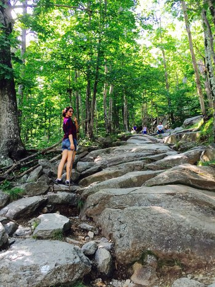
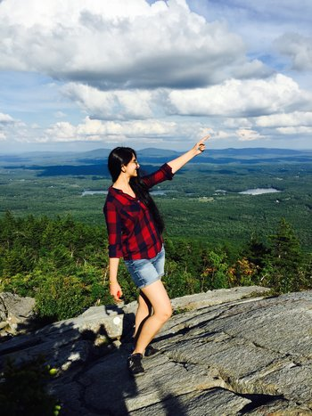

Monadnock Mountain
Monadnock State Park is located in and around the 3,165-ft. The park is surrounded by thousands of acres of protected highlands. Mount Monadnock was designated a National Natural Landmark. The park offers year-round recreational opportunities.
This hike is really long and not easy. Mt. Monadnock is the centerpiece of the 5,000 acre Monadnock State Park. There are 40 miles of hiking trails, a visitor center, a campground with 21 tent sites and 7 youth group sites, a camp store, bathrooms, and shower facilities. The park is open year-round although services are limited from November through April. Pets are not allowed.
The word "monadnock" originally comes from the Abnacki Indian language meaning "mountain that stands alone." Because Monadnock "stands alone", views from the treeless summit stretch far into the distance into surrounding states like Vermont and Massachusetts. Boston and the White Mountains are visible on a clear day.
Trials:
The trials is almost 7miles long. It is a real hike can take full day. Allow for about 5 hours to complete the hike.
When to visit:
You can go any time you wish but I recommend going to Skyline trail summer or fall on a nice sunny day. Touring the Fells on the Skyline Trail, you may sometimes believe you are deep in the woods.
What to bring:
You can bring your food, water, snacks, sunscreen, bug spray, a camera, flashlights, knife, a sweatshirt,
Park Directions
For more info click here